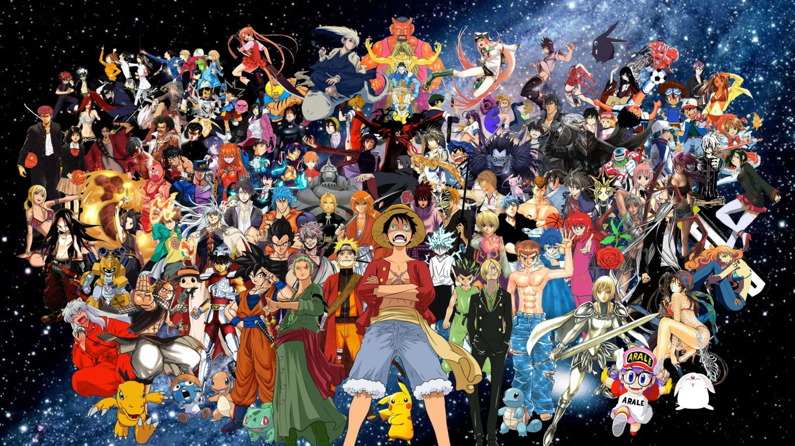
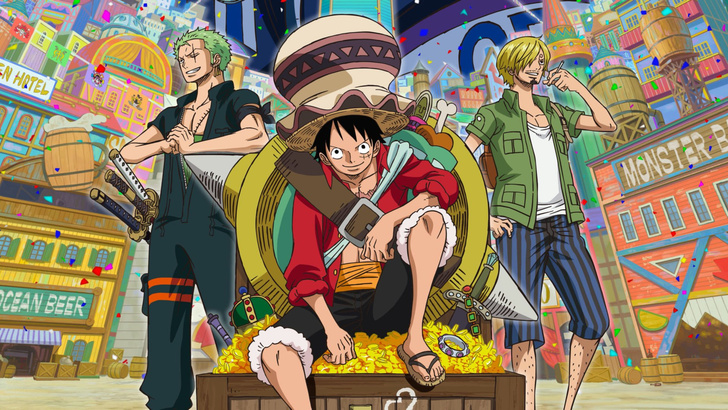
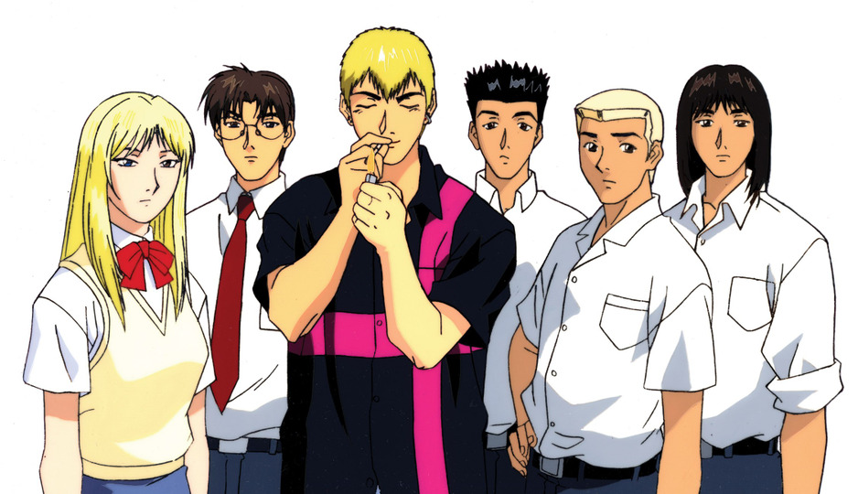
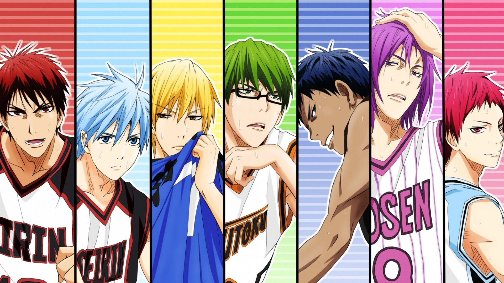

Топ 3 самых лучших аниме
Аниме 1:Ван пис (1999 — наст.время)
Описание:
И переходим к классике! Любимые по всему миру пираты вот уже больше 20 лет каждую неделю приковывают к экрану фанатов, а фигурки с изображением Монки раскупаются как горячие пирожки. Причина в увлекательном сюжете, наполненном приключениями и опасностями — всё, как мы любим 😉 Сюжет повествует о команде бесстрашных пиратов, которые бороздят моря в поисках величайшего сокровища. Во всех нас живет дух Джека Воробья, поэтому ты точно не останешься равнодушной и оценишь предводителя этой шайки, Монки Луффри, который щеголяет соломенной шляпой, а не крюком. А если ты еще не побежала смотреть или пересматривать, то знай: это аниме занимает первое в топе Чимина из BTS, а кто станет спорить с Чимином? 😉
Эпизоды:
1033+ эпизода (все еще выходит)
Аниме 2: Крутой учитель Онидзука (1999-2000)
Описание:
Онидзука Эйкити, известный главарь банды «Онибаку», вместе со своим бывшим одноклассником Рюдзи приезжает в Токио в поисках лучшей жизни. Спокойный и рассудительный Рюдзи открывает собственный автосервис, а Онидзука решает устроиться учителем в школу. Преградой на пути к счастливой жизни преподавателя становится необразованность Эйкити и его, в общем-то, наплевательское отношение к собственному предмету. Естественно, что в государственной школе ловить ему нечего — шансов сдать экзамен на профпригодность у него никаких, — поэтому единственный путь в учителя Онидзуке лежит через частные школы. После долгих мытарств и злоключений, ему наконец удаётся устроиться в академию Священного леса, где он сразу же ввязывается в конфликт с заместителем директора и становится классным руководителем самого проблемного класса в школе. Ученики моментально объявляют новому преподавателю войну, но искренность и простота Онидзуки позволяют ему мало-помалу завоевать уважение как учеников, так и их родителей, а также преподавательского коллектива.
Эпизоды:
43 эпизода
Аниме 3: Баскетбол Куроко
Описание:
В средней школе Тэйко была сформирована невероятно сильная баскетбольная команда, одерживавшая множество побед в различных соревнованиях и три года подряд становившаяся победителем на международном чемпионате. Среди талантливых игроков выделялись пятеро гениев, более известные как «Поколение чудес» (яп. キセキの世代 Кисэки но Сэдай). Но среди них был ещё один игрок, которого признали все пять гениев, так называемый «призрачный, шестой игрок». Однако после выпуска все разошлись по различным старшим школам. Тэцуя Куроко, тот самый «невидимка», поступает в старшую школу Сэйрин, чья баскетбольная команда существует всего лишь два года. На церемонии поступления Куроко решает вступить в неё, как и талантливый Тайга Кагами, ранее игравший в команде США и снисходительно относящийся к японскому баскетболу.
Эпизоды:
76 эпизода
